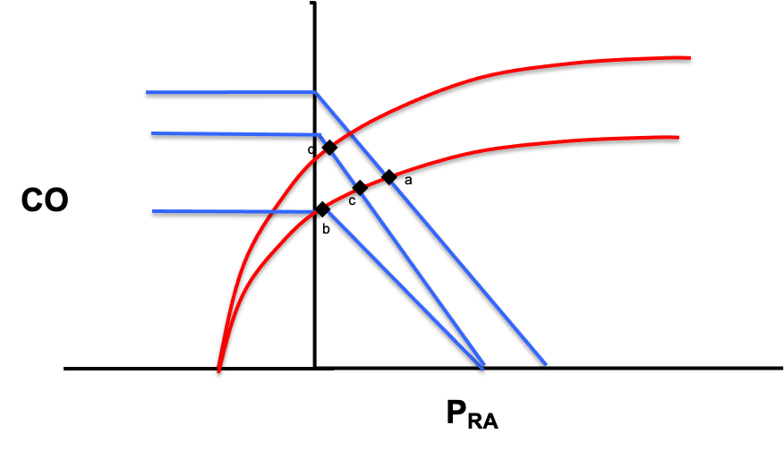

Module N6
The ACT method
We now have a way of thinking about the circulation, the closed loop with its interfaces and the interactions between the cardiac function and venous return curves. We have translated all of this into the shock-type grid. The last step is to turn all of that into something you can actually do at the bedside, again and again, as you assess and treat a patient in shock. One method is A.C.T.: a deliberate, repeatable loop that forces you to make sense of the data you already have, name what you think is wrong, and then prove it with a single hemodynamic variable.
The thinking process is not novel. What makes it powerful is that it is a conscious, deliberate act that prevents reflexive behaviors. Saying each step out loud is what moves you from the subconscious impulse of type 1 thinking toward a process a whole team can follow, even when a case refuses to behave the way the textbook says it should.
Before you A.C.T.: the B.U.S. gate
A.C.T. is not something you run on every patient. The B.U.S. exam from earlier answers the two screening questions that decide whether the full workup is worth it: is shock present? and is the etiology obvious? If perfusion is failing and the cause is already clear, you simply treat. It is when shock is present but the type is not obvious, or when a patient you thought you understood is worsening despite intervention, that you commit to the Advanced Hemodynamic Evaluation and walk the A.C.T. loop. Put simply: walk into the room, take the B.U.S., and if it is positive and the shock type is unclear, A.C.T.
Assess: start with the data you already have
Assess is everything in front of you before you order anything new: the B.U.S. findings, the vital signs, the monitor, the trends, the labs, and the bedside echo. The only question is "what data do we have?" Let's walk through a case together.
A 79-year-old woman presents with abdominal pain and nausea. She has a history of atrial fibrillation and coronary artery disease, is on warfarin and metoprolol, and has a HR 120, BP 75/45 (MAP 65), clear lungs, and a soft but tender right lower quadrant. Urine output is low and she seems mildly confused. None of this is a diagnosis yet. It is the raw material the next two steps organize.

Create a hypothesis: apply the data to create a physiologic cause/effect hypothesis
This is where the last two modules pay off. Instead of reaching for a label, you go back to the graphs and the equations and ask where in the circulatory loop the body is failing. Draw the normal venous return and cardiac function curves, shift them to match the most likely shock etiology, and determine what the grid should show.
Pcrit - Pms = Rcapillary × CO
Pms - RAP = CO × VR
mPAP - LAP = CO × PVRThe four interface gradients. Each is a pressure difference driving flow against a resistance. Read together they trace blood from the arterial side, through the capillaries to the venous reservoir, back to the right heart and across the lungs. In shock, the failing point shows up as a deranged term in one of these lines.
Each interface has components you can measure, components you cannot measure, and components that are calculated. The shock-type grid is simply the map that takes a suspected mechanism and confirms the pattern of measurable values it should produce.
| Shock type | MAP | CO | RAP | PAPm | LAP | SVR |
|---|---|---|---|---|---|---|
| Cardiac (LV) | ↓ | ↓ | ↑ | ↔/↑ | ↑ | ↑ |
| Obstructive (RV) | ↓ | ↓ | ↑ | ↑ | ↔ | ↑ |
| Distributive | ↓ | ↔/↑ | ↓ | ↔ | ↔ | ↓ |
| Hypovolemic | ↓ | ↓ | ↓ | ↔ | ↔ | ↑ |
For the 79-year-old woman, fever, abdominal pain, and age point first toward sepsis with distributive shock. Walk that across the curves: venous capacitance rises as small veins actively dilate, so stressed volume shifts to unstressed and the venous return curve slides left, dropping CO at first. Dilation of the large veins with shunting into low-resistance beds lowers venous resistance and shifts the slope of the venous curve up. The subsequent catecholamine response lifts the cardiac function curve up and to the left. The net prediction for distributive shock is a low RAP with a normal-to-high cardiac output. That is a testable statement, not a hunch.

Test: pick the one parameter that decides
Test is the discipline that turns a guess into a method. Of the six columns in the grid, MAP is low in every shock state, and an accurate assessment of mPAP or LAP usually requires invasive measurement or advanced echo. The Advanced Hemodynamic Evaluation trims the grid to the three things you can characterize at almost any bedside, an approach worth naming as Tone, Filling, and Flow.
| Shock type | Tone (SVR) | Filling (RAP) | Flow (CO) |
|---|---|---|---|
| Cardiac (LV) | ↑ | ↑ | ↓ |
| Obstructive (RV) | ↑ | ↑ | ↓ |
| Distributive | ↓ | ↓ | ↔/↑ |
| Hypovolemic | ↑ | ↓ | ↓ |
The key move is to avoid "measuring everything." Before you act, look across the row of your working hypothesis and the rows you want to rule out. Then select the parameter that distinguishes that type of shock from the others. For the distributive shock hypothesis, a low RAP would narrow things to distributive or hypovolemic, but cardiac output is better still: it is the one variable that distinguishes distributive shock from every other type.
As a preemptive caution, remember: whatever tool you reach for, respect its limits and, when possible, confirm with additional supporting evidence. The number is a piece of evidence, not a verdict, which is exactly why the loop does not end here.
A.C.T. is a loop, not a checklist
Once you have assessed the cardiac output, it becomes new data, and it feeds straight back into the Assess step in our A.C.T. algorithm. But you are not done. At this point, you need to reassess with the additional data to ensure that your original hypothesis is correct. If the data does not fit, the next step is to use the additional data to modify the original hypothesis and retest. We will return to this in Module 8. The take home point is that the loop keeps repeating as the patient evolves. That is the whole method: not a script, but the habit of always knowing which parameter you are evaluating, and why.
Most of A.C.T. can be run with your eyes, your hands, a central line or a bedside echo. Some patients, though, need the filling and flow numbers that only a pulmonary artery catheter can give directly, which is where we go next.
References
- Funk DJ, Jacobsohn E, Kumar A. The role of venous return in critical illness and shock, part I: physiology. Crit Care Med. 2013;41(1):255-262. doi:10.1097/CCM.0b013e3182772ab6.
- Funk DJ, Jacobsohn E, Kumar A. Role of the venous return in critical illness and shock: part II, shock and mechanical ventilation. Crit Care Med. 2013;41(2):573-579. doi:10.1097/CCM.0b013e31827bfc25.